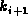
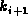
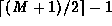
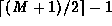

Data Structures and Algorithms
with Object-Oriented Design Patterns in Java
Data Structures and Algorithms
with Object-Oriented Design Patterns in JavaThe algorithm for insertion into a B-Tree begins as do all the other search tree insertion algorithms: To insert item x, we begin at the root and conduct a search for it. Assuming the item is not already in the tree, the unsuccessful search will terminate at a leaf node. This is the point in the tree at which the x is inserted.
If the leaf node has fewer than M-1 keys in it, we simply insert the item in the leaf node and we are done. For example, consider a leaf node with n<M subtrees and n-1 keys of the form
For every new key inserted in the node,
a new subtree is required too.
In this case because T is a leaf,
all its subtrees are empty trees.
Therefore, when we insert item x,
we really insert the pair of items .
Suppose the key to be inserted falls between  and ,
i.e.,
and ,
i.e.,  .
When we insert the pair into T
we get the new leaf T' given by
.
When we insert the pair into T
we get the new leaf T' given by
What happens when the leaf is full? That is, suppose we wish to insert the pair, into a node T which already has M-1 keys. Inserting the pair in its correct position gives a result of the form
However, this is not a valid node in a B-tree of order M because it has M+1 subtrees and M keys. The solution is to split node T' in half as follows
Note, is a valid B-tree node because it contains
subtrees and  keys.
Similarly, is a valid B-tree node because it contains
subtrees and  keys.
Note that there is still a key left over,
namely .
keys.
Similarly, is a valid B-tree node because it contains
subtrees and  keys.
Note that there is still a key left over,
namely .
There are now two cases to consider--either T is the root or it is not. Suppose T is not the root. Where we once had the single node T, we now have the two nodes, and , and the left-over key, . This situation is resolved as follows: First, replaces T in the parent of T. Next, we take the pair and recursively insert it in the parent of T.
Figure  illustrates this case for a B-tree of order three.
Inserting the key 6 in the tree causes the leaf node to overflow.
The leaf is split in two.
The left half contains key 5; and the right, key 7; and key 6 is left over.
The two halves are re-attached to the parent in the appropriate place
with the left-over key between them.
illustrates this case for a B-tree of order three.
Inserting the key 6 in the tree causes the leaf node to overflow.
The leaf is split in two.
The left half contains key 5; and the right, key 7; and key 6 is left over.
The two halves are re-attached to the parent in the appropriate place
with the left-over key between them.
Figure: Inserting items into a B-tree (insert 6).
If the parent node fills up,
then it too is split and the two new nodes are inserted in the grandparent.
This process may continue all the way up the tree to the root.
What do we do when the root fills up?
When the root fills, it is also split.
However, since there is no parent into which to insert the two new children,
a new root is inserted above the old root.
The new root will contain exactly two subtrees and one key,
as allowed by Definition .
Figure illustrates this case for a B-tree of order three.
Inserting the key 3 in the tree causes the leaf node to overflow.
Splitting the leaf and reattaching it causes the parent to overflow.
Similarly, splitting the parent and reattaching it causes the grandparent
to overflow but the grandparent is the root.
The root is split and a new root is added above it.
Figure: Inserting items into a B-tree (insert 3).
Notice that the height of the B-tree only increases when the root node splits.
Furthermore, when the root node splits,
the two halves are both attached under the new root.
Therefore, the external nodes all remain at the same depth,
as required by Definition .
 Copyright © 1998 by Bruno R. Preiss, P.Eng. All rights reserved.
Copyright © 1998 by Bruno R. Preiss, P.Eng. All rights reserved.